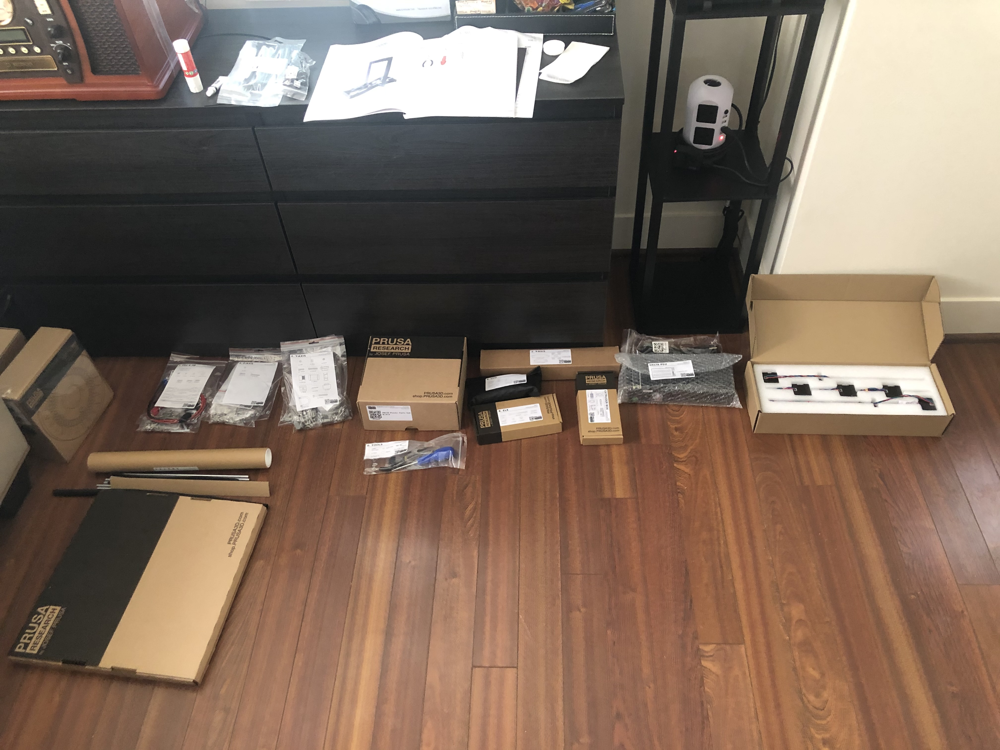
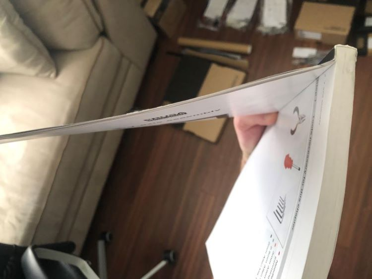
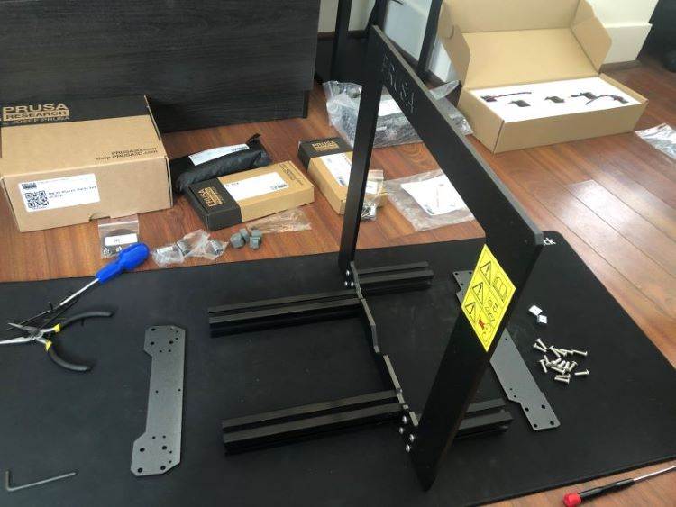
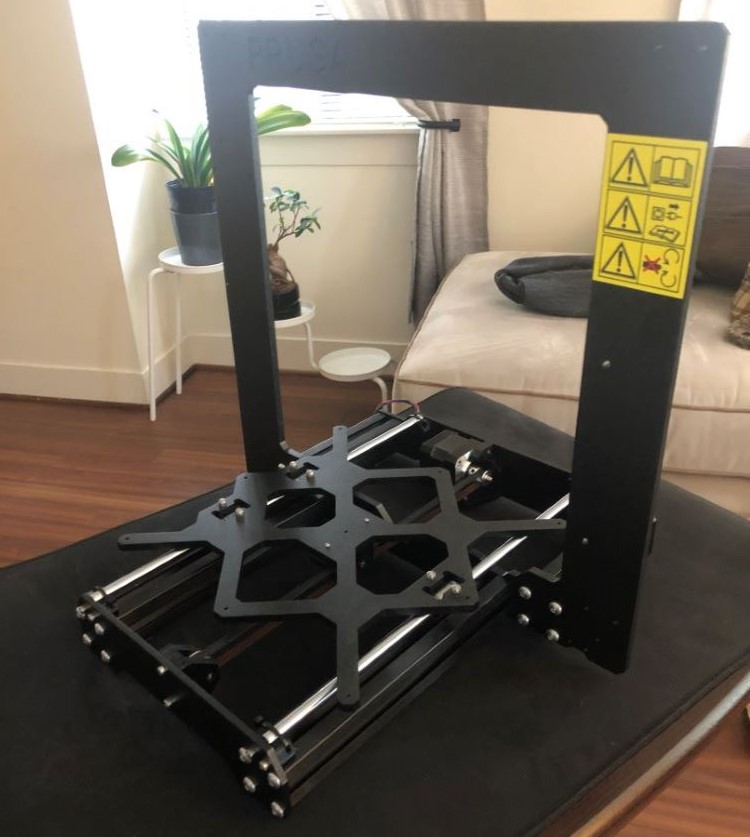
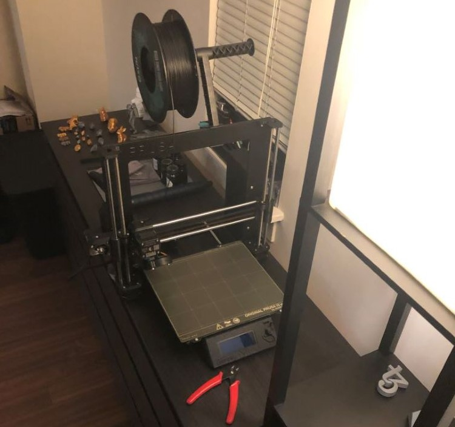
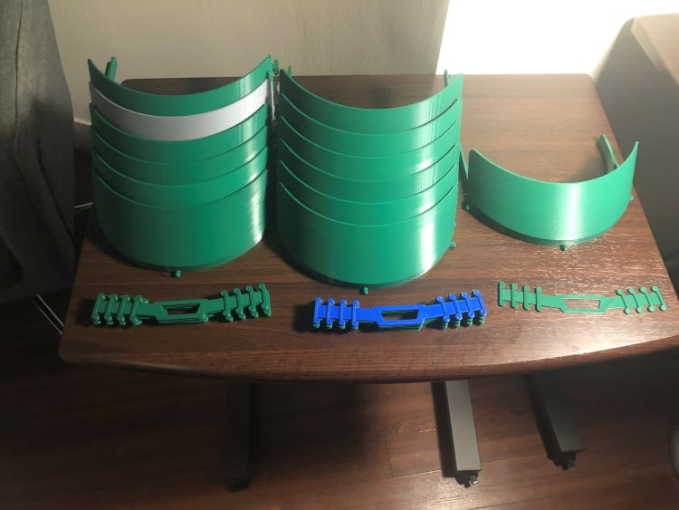
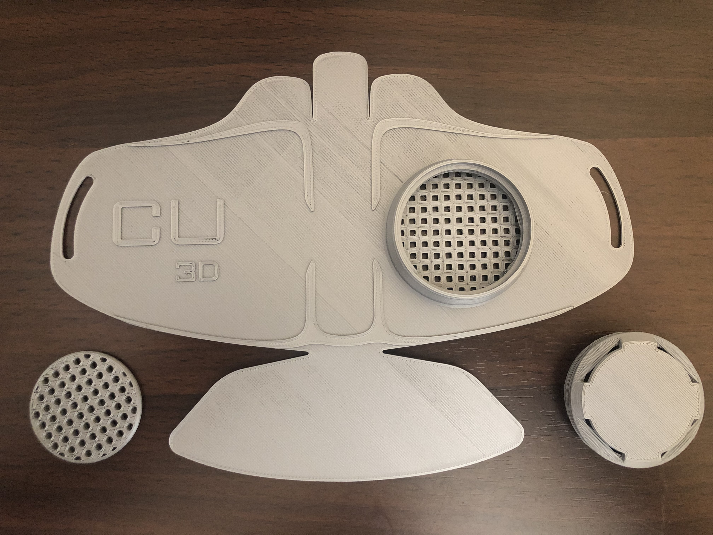

Matter Hackers COVID Response
3D Printing PPE for frontline workers
At the time COVID hit the US, I was looking for new efforts to pursue that wouldn't be interreupted during a lockdock. I was luck enough to stumble upon some 3D printing blogs and fall down that rabbit-hole a few months before any serious supply chain issues. Fall 2019, in my 1 bedroom Philadelphia apartment, I built my first Prusa MK3S Printer.
Build Gallery
1-Unboxed and truly intimidated
2-A very thick manual
3-Frame assembly
4-Print-bed assembled
5-Finished product
A few months into the venture, COVID cases were spiking and hospitals were over-run with patients while front-line workers were suffering from a lack of resources and PPE. My center city apartment building was home to dozens of nurses and doctors in the Philadelphia area and I heard about the struggle on a daily basis. Through the Matter Hackers community I learned that maker communities were coming together to help get printed PPE into the hands of front-line workers. So, I downloaded some designs and fired up my printer to see what I could do.
Surgical Mask Comfort Strap
Protective Face Shield (Newer Design)
First Delivery: 13 Face shields & 20 Surgical mask comfort straps I was able to pack them up and deliver them to hospital workers in my building to get them in use immediately.
There was also a design for a printable N95 mask circulating but after the first print I could tell the design needed some work and was not front-line ready. It required custom molding to the wearers face, and an additional filter which I had no way of procuring at the time.
I learned a lot from this endevour. It was a fantastic way to get deep into the 3D printing industry very quickly. I was able to develop a more complete understanding of this printer types limitations within the scope of manufacturing. Not long after, papers were published regarding the use of 3D printed PPE for the COVID-19 response and much of my own learnings were corroberated. It gave me a tremendous sense of pride to know I was able to help out my neighbors while being trapped inside during quarantine.
← Go Back